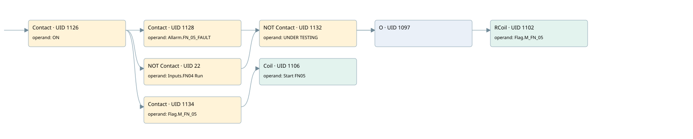

fn05
motors 1 · 검색 색인 순서 41 · 원본 내부 NID 추정 40
백업 PLF 원본의 2817203 바이트 위치에서 복원한 XML. 검색 문서 1970의 객체 키 16102200ca11000000000000와 연결했다. 이름 해석 7/7개. 남은 RefId는 상수 또는 미해석 참조다.
연결 구조 다시 그리기
원본 Part/PCon/Wire를 이용한 연결도다. TIA 화면의 래더 배치 또는 실행 결과를 재현한 그림은 아니다. 핀 연결은 아래 표와 원본 XML을 기준으로 읽는다. 노드 위에 마우스를 두면 피연산자 이름을 볼 수 있다.

접점·코일·블록과 피연산자
| Part UID | Gate | Negated 핀 | 연결 피연산자 |
|---|---|---|---|
| 1126 | Contact | operand = ON | |
| 1128 | Contact | operand = Allarm.FN_05_FAULT | |
| 22 | Contact | operand | operand = Inputs.FN04 Run |
| 1132 | Contact | operand | operand = UNDER TESTING |
| 1097 | O | ||
| 1102 | RCoil | operand = Flag.M_FN_05 | |
| 1134 | Contact | operand = Flag.M_FN_05 | |
| 1106 | Coil | operand = Start FN05 |
접점 경로를 펼친 조건식
Contact·O/A·비교기의 원본 연결을 읽기 쉽게 펼친 보조 해석이다. POWER는 전원 레일 시작을 뜻한다. 호출 블록·에지·타이머의 내부 동작과 다중 쓰기 순서는 이 표로 실행 검증하지 않았다. 미해석 핀과 RefId는 원문 연결표에서 확인한다.
| UID | 동작 | 대상 | 원본 접점 경로 | 내용 |
|---|---|---|---|---|
| 1102 | RCoil | Flag.M_FN_05 | ((ON AND Allarm.FN_05_FAULT) OR ((ON AND NOT [Inputs.FN04 Run]) AND NOT [UNDER TESTING])) | 조건 성립 시 Reset |
| 1106 | Coil | Start FN05 | (ON AND Flag.M_FN_05) | 조건에 따른 Coil 기록 |
원본 배선 연결
| Wire UID | 동일 Wire 연결 끝점 |
|---|---|
| 1136 | Powerrail {} ↔ Part 1126.in |
| 1114 | ORef 1107 (ON) ↔ Part 1126.operand |
| 1127 | Part 1126.out ↔ Part 1128.in ↔ Part 22.in ↔ Part 1134.in |
| 1115 | ORef 1108 (Allarm.FN_05_FAULT) ↔ Part 1128.operand |
| 1129 | Part 1128.out ↔ Part 1097.in1 |
| 21 | ORef 23 (Inputs.FN04 Run) ↔ Part 22.operand |
| 24 | Part 22.out ↔ Part 1132.in |
| 1117 | ORef 1110 (UNDER TESTING) ↔ Part 1132.operand |
| 1133 | Part 1132.out ↔ Part 1097.in2 |
| 1119 | Part 1097.out ↔ Part 1102.in |
| 1121 | ORef 1111 (Flag.M_FN_05) ↔ Part 1102.operand |
| 1122 | ORef 1112 (Flag.M_FN_05) ↔ Part 1134.operand |
| 1135 | Part 1134.out ↔ Part 1106.in |
| 1124 | ORef 1113 (Start FN05) ↔ Part 1106.operand |
식별자 해석 근거 7개
| ORef UID | RefId | 이름 | IdentXmlPart 파일 | 해석 방법 |
|---|---|---|---|---|
| 1107 | 1 | ON | 0602-IdentXmlPart.xml | UID/RID + search-text + NID agreement |
| 1108 | 188 | Allarm.FN_05_FAULT | 0604-IdentXmlPart.xml | UID/RID + search-text + NID agreement |
| 23 | 270 | Inputs.FN04 Run | 0604-IdentXmlPart.xml | UID/RID + search-text + NID agreement |
| 1110 | 4 | UNDER TESTING | 0602-IdentXmlPart.xml | UID/RID + search-text + NID agreement |
| 1111 | 189 | Flag.M_FN_05 | 0604-IdentXmlPart.xml | UID/RID + search-text + NID agreement |
| 1112 | 189 | Flag.M_FN_05 | 0604-IdentXmlPart.xml | UID/RID + search-text + NID agreement |
| 1113 | 190 | Start FN05 | 0602-IdentXmlPart.xml | UID/RID + search-text + NID agreement |
검색 코드 보조 자료
참조 명칭을 찾기 위한 자료이며 실행 순서나 AND/OR 관계는 위 연결표로 확인한다.
"on" "allarm".fn_05_fault "flag".m_fn_05 "inputs"."fn04 run" "under testing" "flag".m_fn_05 "start fn05"